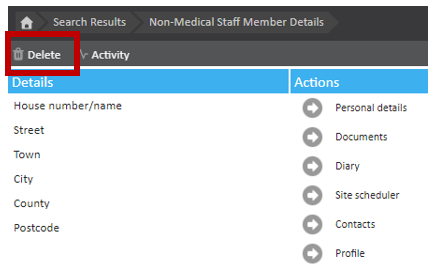
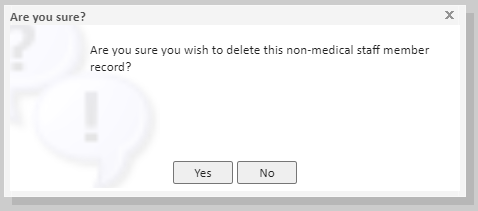
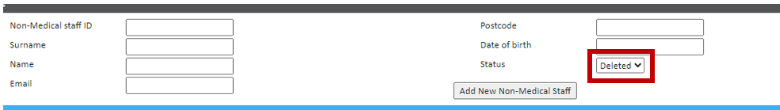
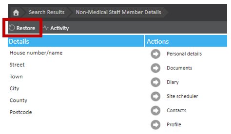

This article will walk you through the steps you will need to take in order to delete a staff member. Whilst the staff member will not be permanently deleted from your chamber, they will no longer be an 'active' staff member. If a staff member has been deleted in error, or if a staff member needs to become 'active' again within your chamber, this article will also explain how to restore a deleted staff member.
To delete a staff member, you will first need to find the relevant staff member by navigating Start Page > Find Staff Member.
Once you have navigated to the staff member page, at the top left, underneath the breadcrumb trail, you will find the 'Delete' button.

Once you have clicked on the 'Delete' button the following pop up will appear asking you to confirm you wish to delete the staff member:

Click 'Yes' to confirm you would like to change the status of the staff member to 'Deleted'.
The status of the staff member will now be changed to 'Deleted'.
A staff member cannot be permanently deleted. By deleting a staff member you are just changing the status of the staff member.
If you have deleted a staff member in error, or you need to change the status of the staff member back to active this can be done by following these steps.
You will first need to find the staff member by using the 'Find staff member' function. Start Page > Find staff member.
When searching for a staff member to restore, you will need to ensure the 'Status' field is set to 'Deleted'.

Once you have selected the relevant staff member the 'Restore' button can be found at the top left of the screen, underneath the breadcrumb trail.

Once you have clicked on this, the staff member's status will be changed back to 'Active'.